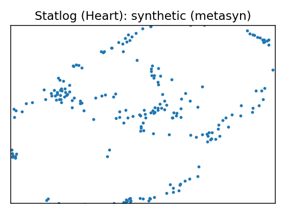
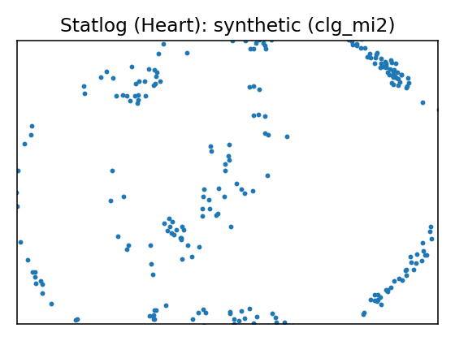
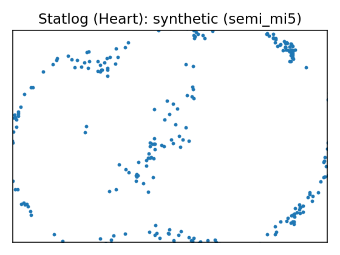
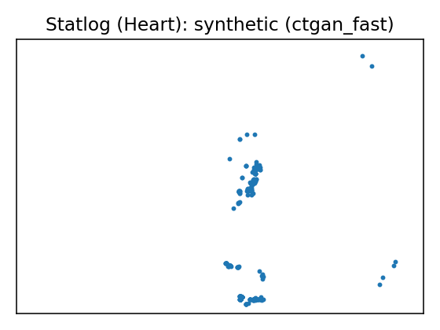
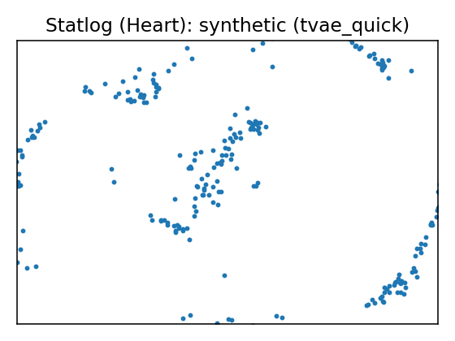
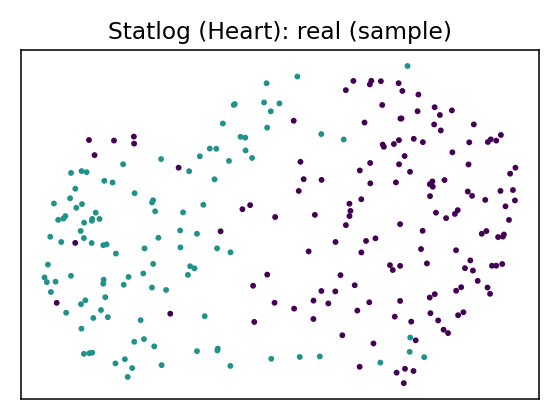
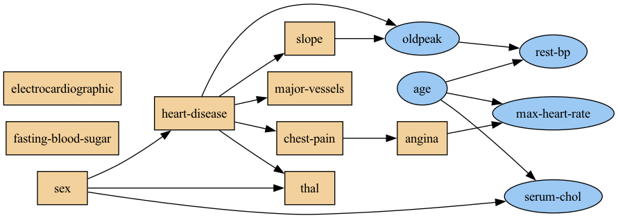
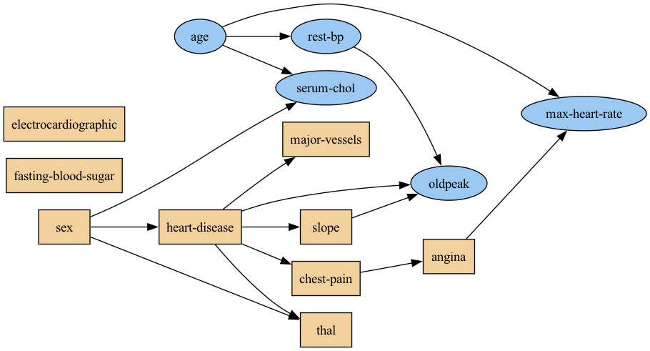

Data Report — Statlog (Heart)
Cost Matrix
_ abse pres absence 0 1 presence 5 0
where the rows represent the true values and the columns the predicted.
Documentation: Attribute Information:
-- 1. age
-- 2. sex
-- 3. chest pain type (4 values)
-- 4. resting blood pressure
-- 5. serum cholestoral in mg/dl
-- 6. fasting blood sugar > 120 mg/dl
-- 7. resting electrocardiographic results (values 0,1,2)
-- 8. maximum heart rate achieved
-- 9. exercise induced angina
-- 10. oldpeak = ST depression induced by exercise relative to rest
-- 11. the slope of the peak exercise ST segment
-- 12. number of major vessels (0-3) colored by flourosopy
-- 13. thal: 3 = normal; 6 = fixed defect; 7 = reversable defect
Attributes types
Real: 1,4,5,8,10,12 Ordered:11, Binary: 2,6,9 Nominal:7,3,13
Variable to be predicted
Absence (1) or presence (2) of heart disease
Source: UCI dataset 145
SemMap JSON-LD: dataset.semmap.json · RDFa HTML
Overview
| Metric | Value |
|---|---|
| Dataset | Statlog (Heart) |
| Source | UCI dataset 145 |
| Rows | 270 |
| Columns | 14 |
| Discrete | 9 |
| Continuous | 5 |
| SemMap | SemMap JSON-LD SemMap HTML |
| Missingness | Not modeled |
Variables and summary
| variable | inferred | dist |
|---|---|---|
| age | continuous | 54.4333 ± 9.1091 [29, 48, 55, 61, 77] |
| sex | discrete | 1: 183 (67.78%) |
| chest-pain | discrete | 4: 129 (47.78%) 3: 79 (29.26%) 2: 42 (15.56%) 1: 20 (7.41%) |
| rest-bp | continuous | 131.3444 ± 17.8616 [94, 120, 130, 140, 200] |
| serum-chol | continuous | 249.6593 ± 51.6862 [126, 213, 245, 280, 564] |
| fasting-blood-sugar | discrete | 1: 40 (14.81%) |
| electrocardiographic | discrete | 2: 137 (50.74%) 0: 131 (48.52%) 1: 2 (0.74%) |
| max-heart-rate | continuous | 149.6778 ± 23.1657 [71, 133, 153.5, 166, 202] |
| angina | discrete | 1: 89 (32.96%) |
| oldpeak | continuous | 1.0500 ± 1.1452 [0, 0, 0.8, 1.6, 6.2] |
| slope | discrete | 1: 130 (48.15%) 2: 122 (45.19%) 3: 18 (6.67%) |
| major-vessels | discrete | 0: 160 (59.26%) 1: 58 (21.48%) 2: 33 (12.22%) 3: 19 (7.04%) |
| thal | discrete | 3: 152 (56.30%) 7: 104 (38.52%) 6: 14 (5.19%) |
| heart-disease | discrete | 1: 150 (55.56%) |
Fidelity summary
| umap | model | backend | disc jsd mean | disc jsd median | cont ks mean | cont w1 mean | downstream sign match |
|---|---|---|---|---|---|---|---|
 |
metasyn | metasyn | 0.0355 | 0.0378 | 0.1415 | 2.4032 | |
 |
clg_mi2 | pybnesian | 0.0293 | 0.0199 | 0.1126 | 3.0859 | |
 |
semi_mi5 | pybnesian | 0.0293 | 0.0199 | 0.1015 | 2.6707 | |
 |
ctgan_fast | synthcity | 0.3115 | 0.237 | 0.8556 | 45.6654 | |
 |
tvae_quick | synthcity | 0.0727 | 0.0685 | 0.2156 | 6.9723 |
Privacy summary
| model | backend | n real | n synth | exact overlap rate | near duplicate rate eps | nn distance mean | k min | k pct lt5 | k map | rare qi reproduction rate | identifiability score | delta presence |
|---|---|---|---|---|---|---|---|---|---|---|---|---|
| metasyn | metasyn | 270 | 270 | 0 | 0.9741 | 0.0822 | 1 | 1 | 7 | 0 | 2.25 | |
| clg_mi2 | pybnesian | 270 | 270 | 0 | 0.9889 | 0.0494 | 1 | 1 | 1 | 0 | 5 | |
| semi_mi5 | pybnesian | 270 | 270 | 0 | 0.9926 | 0.0573 | 1 | 1 | 3 | 0 | 1.8 | |
| ctgan_fast | synthcity | 270 | 270 | 0 | 0.4222 | 0.2387 | 1 | 1 | 270 | 0 | 0.6111 | |
| tvae_quick | synthcity | 270 | 270 | 0 | 0.9667 | 0.0652 | 1 | 1 | 1 | 0 | 13 |
Models
| UMAP | Details | Structure | |||||||||||||||||||||||||||||||||||||||||||||||||||||||||||||||||||||||||||||||||||||||||||||||||||||||||||||||||
|---|---|---|---|---|---|---|---|---|---|---|---|---|---|---|---|---|---|---|---|---|---|---|---|---|---|---|---|---|---|---|---|---|---|---|---|---|---|---|---|---|---|---|---|---|---|---|---|---|---|---|---|---|---|---|---|---|---|---|---|---|---|---|---|---|---|---|---|---|---|---|---|---|---|---|---|---|---|---|---|---|---|---|---|---|---|---|---|---|---|---|---|---|---|---|---|---|---|---|---|---|---|---|---|---|---|---|---|---|---|---|---|---|---|---|---|
 |
Real data | ||||||||||||||||||||||||||||||||||||||||||||||||||||||||||||||||||||||||||||||||||||||||||||||||||||||||||||||||||
Model: metasyn (metasyn)
Per-variable fidelity
Downstream metrics
Privacy metrics
|
| ||||||||||||||||||||||||||||||||||||||||||||||||||||||||||||||||||||||||||||||||||||||||||||||||||||||||||||||||||
Model: clg_mi2 (pybnesian)
Per-variable fidelity
Privacy metrics
|
 | ||||||||||||||||||||||||||||||||||||||||||||||||||||||||||||||||||||||||||||||||||||||||||||||||||||||||||||||||||
Model: semi_mi5 (pybnesian)
Per-variable fidelity
Privacy metrics
|
 | ||||||||||||||||||||||||||||||||||||||||||||||||||||||||||||||||||||||||||||||||||||||||||||||||||||||||||||||||||
Model: ctgan_fast (synthcity)
Per-variable fidelity
Privacy metrics
|
 | ||||||||||||||||||||||||||||||||||||||||||||||||||||||||||||||||||||||||||||||||||||||||||||||||||||||||||||||||||
Model: tvae_quick (synthcity)
Per-variable fidelity
Privacy metrics
|
|
{kind=link}
{kind=link}